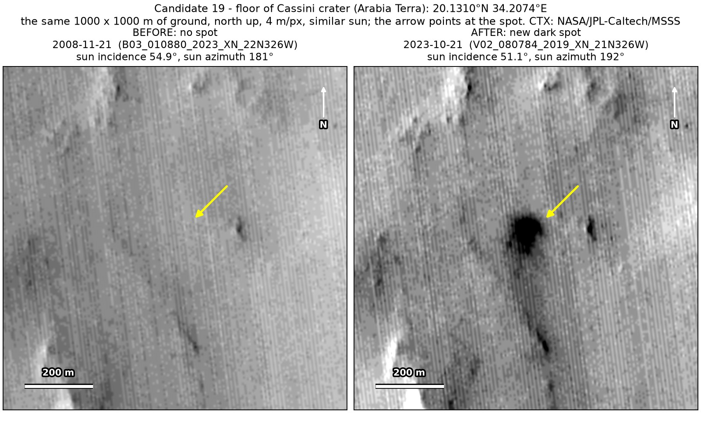
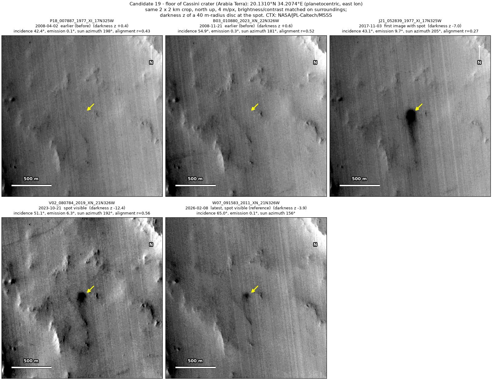
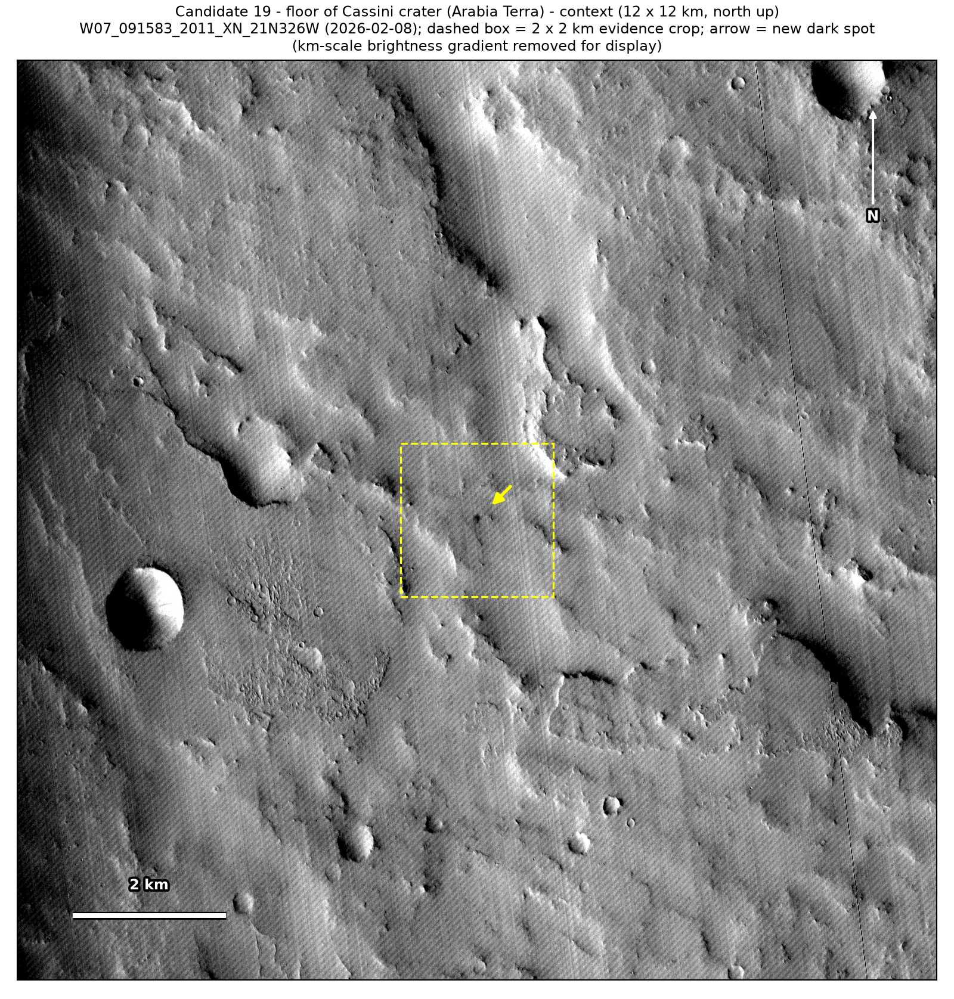
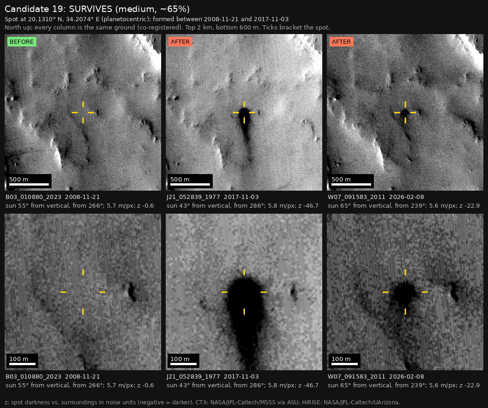

Professor of Mathematics
Paata Ivanisvili
Department of Mathematics, University of California, Irvine

← Possible new impact sites on Mars
Candidate 19: Floor of Cassini crater, Arabia Terra
Strong · roughly 65%

What changed. A very dark, round spot 80 to 100 m across, with a dark tail about 300 m long pointing south, appeared on the flat floor of Cassini crater between November 2008 and November 2017. The core is still black in 2023 and 2026; the tail has faded.
Why it may be a new impact. Three images from 2008 show nothing there, and a small dark feature just east of the spot is visible in every image, so the 2008 images could have shown it. A round dark core with a tail blown downwind is a common look for a fresh impact on dusty ground, and a wind streak would need an obstacle to form behind, which was not there in 2008.
- Location
- 20.131° N, 34.207° E
- Absent
- 2 April 2008, 24 October 2008 and 21 November 2008
- Present
- 3 November 2017, 21 October 2023 and 8 February 2026
- Size
- Very dark round core 80 to 100 m across, with a tail about 300 m long that has since faded
- Confidence
- Strong candidate; roughly 65% that it is a new impact.
- Caveat
- Arabia Terra is full of dark slope streaks (small dust avalanches), and this could be one with a blunt head. Against that, the crater floor is flat at this scale, the tail narrows away from the core instead of fanning out, and it faded within eight years, while slope streaks usually last decades. Without a HiRISE image or a height map this cannot be settled, so the confidence is lower. It first shows in a 2017 image, so the camera teams may already have it on their unpublished lists; but it lies outside every footprint of the high-resolution HiRISE camera, and the teams normally photograph a new impact with HiRISE within months of noticing it. Like every candidate here, it is unconfirmed: see the caveat.


